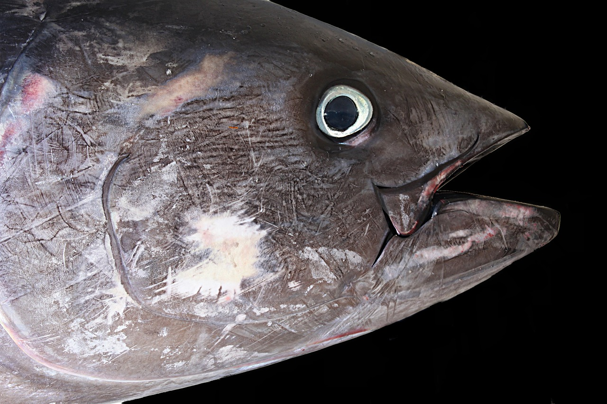
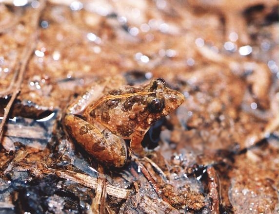
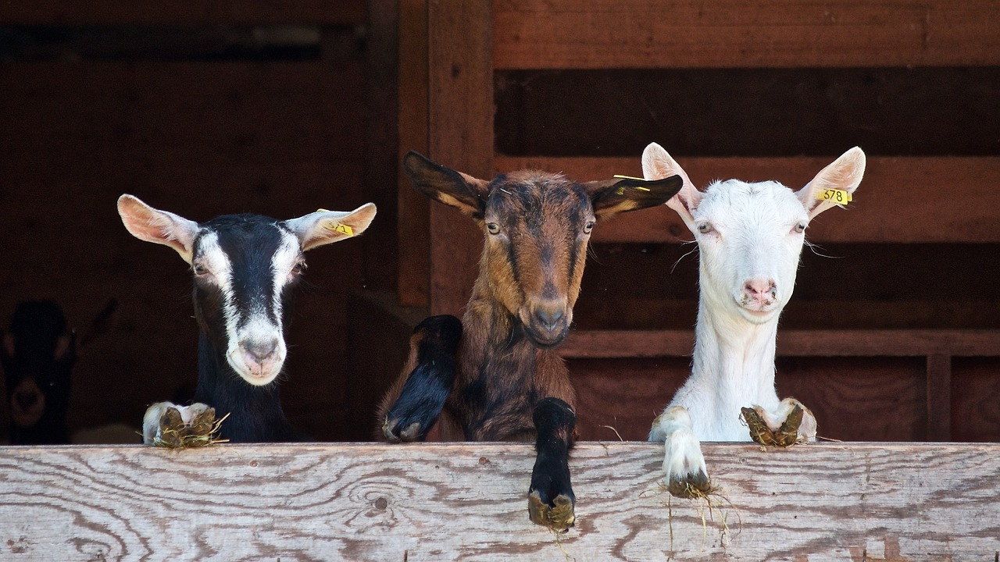
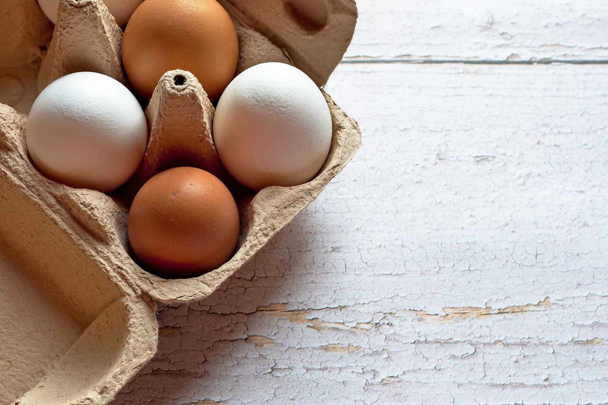

Mundo Animal
Se você se interessa pelo mundo animal e está curioso pelo que rola no mundo da bicharada, confira abaixo tudo que há de interessante nele:
curiosidades sobre os ursos polares

Os ursos polares são popularmente vistos como animais adoráveis. Mas o que muita gente não sabe é que esses mamíferos de pelos macios são um dos maiores carnívoros terrestres da atualidade. Então, para conhecer um pouco mais, que tal algumas curiosidades sobre eles?
Um atum pode nadar até 64 quilômetros em um só dia

Os atuns e espécies vizinhas têm um sistema vascular especializado em trocas de calor, podendo elevar a temperatura do corpo acima da água onde nadam - são endotérmicos.
Por esta razão, são grandes nadadores, podendo realizar migrações ao longo dum oceano.
Alguns anfíbios saltam distâncias que correspondem a 100 vezes o seu tamanho

É o que acontece com a rãzinha - saltadora (Pseudopaludicola saltica), um bichinho encontrado no Brasil. Com apenas 1,5 centímetro, ela é capaz de dar incríveis saltos de 1,5 metro! Proporcionalmente, é como se um homem adulto fosse capaz de saltar uns 170 metros – quase a distância de dois quarteirões.
As cabras têm sotaques diferentes

Assim como paulistas, cariocas, baianos, amazonenses, sul rio-grandenses têm sotaques diferentes, as cabras também têm.
Esta foi a conclusão de uma pesquisa realizada por cientistas da Escola de Ciências Biológicas e Químicas da Universidade de Londres Queen Mary, no Reino Unido, publicada no jornal Animal Behaviour.
Galinhas com lóbulos vermelhos da orelha põem ovos castanhos; já as com os lóbulos brancos põem ovos brancos

O que determina a cor da casca dos ovos é, afinal, o tipo de galinha que põe o ovo e a cor,
geralmente, corresponde à cor do lóbulo da orelha da ave.